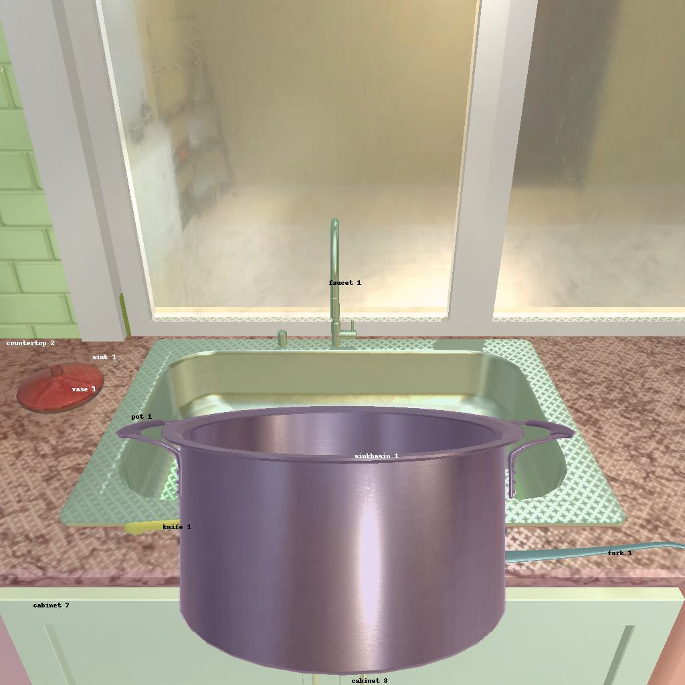

---------------------------------------------------------task: 16---------------------------------------------------------
--------------------------------------------------------------------------------------------------------------------------------------------------------------------
--------------------------------------------------------------------------------------------------------------------------------------------------------------------
Step:--------------------------------------------------------------------------15-------------------------------------------------------------------------------
----------------------------------------
VLM Prompt:
Image1:
Image2:
Image3:
**Instruction**
1. Analyze the provided image to identify all visible household objects, focusing on those relevant to the task description "cool some pan and put it in sinkbasin."
2. Use the analysis of the image and the task hint "The agent must find an object of the desired type, pick it up, go to a fridge, cool the object with the fridge, then find the correct location to place it, and put it down there. The agent does not need to use the fridge button or open the fridge to cool the object, and the agent just needs to do action that is "cool the object with the fridge"." to answer the question: what is the most reasonable action in the choices for the task description "cool some pan and put it in sinkbasin"?
4. Decide and write the answer using the template: The answer is: (i): , where i is the real number. If there is no desired object in the image, search every place based on **Initial Observation** to find the object. And if no one is exactly correct, choose a similar answer.
**Initial Observation**
You are in the middle of a room. Looking quickly around you, you can see cabinet (1-9), countertop (1-3), drawer (1-9), stoveburner (1-4), microwave (1), sink (1), fridge (1), toaster (1), coffeemachine (1), sinkbasin (1), shelf (1-3), garbagecan (1)
**Answer Choices**
(1): go to cabinet 1
(2): go to countertop 1
(3): go to cabinet 2
(4): go to countertop 2
(5): go to drawer 1
(6): go to drawer 2
(7): go to drawer 3
(8): go to drawer 4
(9): go to stoveburner 1
(10): go to drawer 5
(11): go to stoveburner 2
(12): go to stoveburner 3
(13): go to stoveburner 4
(14): go to cabinet 3
(15): go to cabinet 4
(16): go to microwave 1
(17): go to cabinet 5
(18): go to cabinet 6
(19): go to cabinet 7
(20): go to sink 1
(21): go to fridge 1
(22): go to toaster 1
(23): go to coffeemachine 1
(24): go to cabinet 8
(25): go to drawer 6
(26): go to drawer 7
(27): go to drawer 8
(28): go to shelf 1
(29): go to shelf 2
(30): go to countertop 3
(31): go to shelf 3
(32): go to drawer 9
(33): go to cabinet 9
(34): go to garbagecan 1
(35): clean pot 1 with sink 1
(36): clean pot 1 with sinkbasin 1
(37): examine pot 1
**Answer**
Let's think step by step by following the instructions.
----------------------------------------
----------------------------------------
Original Response:
The task description is to "cool some pan and put it in sinkbasin." Based on the task hint, the agent must find a pan, cool it with the fridge, and then put it in the sinkbasin.
Analyzing the image, we can see a pot (which can be considered similar to a pan for this task) on the countertop next to the sink, labeled as "pot 1." There is also a sinkbasin labeled "sinkbasin 1."
The task does not require the use of the fridge button or opening the fridge; the agent just needs to perform the action "cool the object with the fridge." Since the image already has the pot and the sinkbasin visible, the most reasonable actions from the choices provided would be to cool the pot with the fridge and then place it in the sinkbasin.
However, the answer choices do not include an action that directly states "cool pot 1 with fridge 1," so we must choose the closest reasonable action that can contribute to the completion of the task.
The answer is: (21): go to fridge 1. This action is necessary to complete the task of cooling the pot, even though the action of cooling is not explicitly stated. After cooling the pot, the agent would then need to go to sinkbasin 1 to place it there, which is not listed as an option but is implied as the next step after cooling.
----------------------------------------
----------------------------------------
>>> Refine Original VLM Response and Get Pure Action: go to fridge 1
----------------------------------------
-----------------------------------------------------------------
Running time: 12.497541427612305 seconds
Total Money: 10.22357
-----------------------------------------------------------------
-----------------------------------------------------------------
Text Observation:You arrive at loc 20. The fridge 1 is closed.
-----------------------------------------------------------------
UNSUCCEED